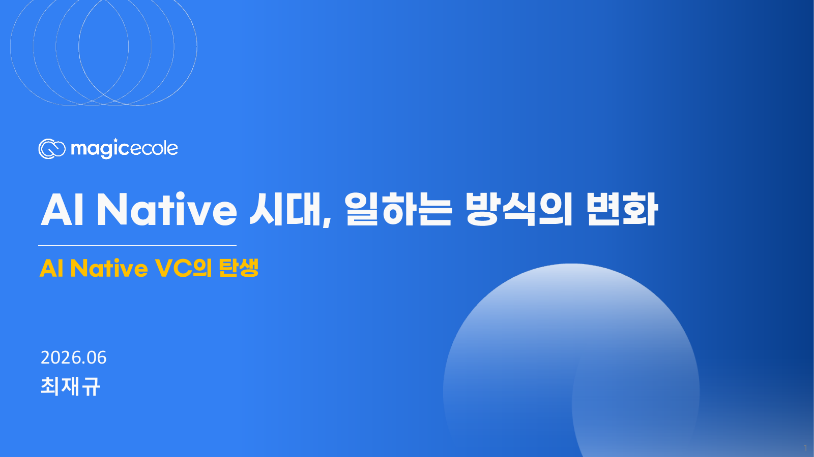
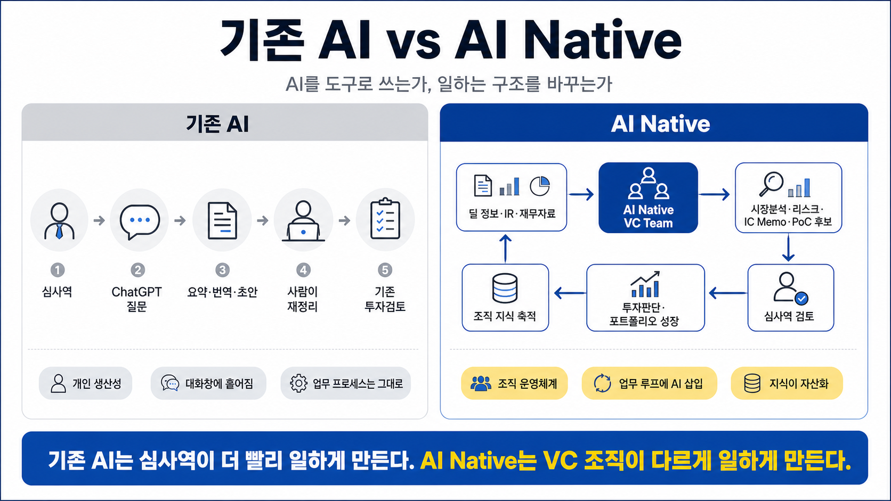

업무 요청서
AI에게 시킬 일을 목적, 입력 자료, 산출물, 검토 기준으로 구조화합니다.
SV인베스트먼트 학습 보조 자료
Prompt, Context, Harness, Loop를 기준으로 투자검토 업무와 포트폴리오 Value-up을 AI Native 운영 체계로 전환하는 90분 강의 허브입니다.
핵심 메시지
AI가 투자 판단을 대신하는 것이 아닙니다. 판단 전에 필요한 리서치, 질문, 메모, 리스크 정리를 더 빠르고 일관된 업무 루프로 만드는 것입니다.
AI에게 시킬 일을 목적, 입력 자료, 산출물, 검토 기준으로 구조화합니다.
자료, 용어, 판단 기준, 금지 사항을 반복 가능한 Context Pack으로 묶습니다.
개인 사용을 검토자, 권한, 로그, KPI가 있는 조직 업무 루프로 연결합니다.
AI 초안과 사람의 수정 결과를 비교해 다음 실행 기준을 개선합니다.
90분 운영 흐름
AI는 투자 테마이면서 동시에 포트폴리오 운영 역량이라는 관점을 정렬합니다.
도구 사용이 아니라 업무 루프, 승인 지점, KPI가 바뀌는 구조를 설명합니다.
심사역 업무와 포트폴리오 Value-up에 적용 가능한 실습과 전환안을 다룹니다.

6/25 강의자료 보강
85페이지 강의자료의 흐름은 AI 기술의 속도, AI Native와 Harness 사례, 업무 도입 방식, Prompt/Context/Harness/Loop, SV AX 전략으로 이어집니다. 강의 후에는 아래 순서대로 다시 보면 업무 적용 포인트가 선명해집니다.
강의자료 PDF 다운로드복습 지도
모델 성능, 비용, 멀티모달, 에이전트 흐름을 기술 뉴스가 아니라 조직 운영 변수로 읽습니다.
개인 생산성보다 업무 루프, 사람 승인, 품질 검증, 지식 축적이 있는 구조인지 봅니다.
반복 빈도, 출력물 명확성, 보안 리스크, 사람 검토 가능성을 기준으로 후보를 좁힙니다.
Prompt는 지시서, Context는 작업 책상, Harness는 운영 장치, Loop는 개선 리듬입니다.
리터러시, 적용 분야 파악, 과제 정의서, 기획-구현-회고 순서로 내부 성공사례를 만듭니다.
추가 학습 주제
AI 리터러시
벤치마크, 시트르니 보고서 같은 외부 리포트를 기술 뉴스가 아니라 업무 변화 신호로 해석합니다.
도구 분류
도구 목록을 외우기보다 산출물 형태와 반복 업무에 맞춰 선택하는 기준을 잡습니다.
사례 해석
리서치, 에이전트 배치, 품질검증, 폐쇄형 학습 루프를 VC 업무로 번역합니다.
Context Pack
자료, 예시, 기록, 데이터, 제약을 정리해야 AI 결과가 반복 사용 가능한 수준으로 올라갑니다.
작은 도구
반복 양식, 체크리스트, 계산표를 작은 내부 도구로 만들어 업무 루프에 붙이는 법을 봅니다.
운영 설계
Skill은 심사역의 판단 절차를 AI에 가르치고, MCP·Connector는 자료와 업무 시스템 연결을 승인 기준 안에서 다룹니다.
기업 AX 교육 자료에서 뽑은 SVInvest 인사이트
첨부된 AI Transformation Strategy Day2 자료의 핵심은 AI를 개별 도구가 아니라 전략, 워크플로우, 에이전트, 사람의 감독, 거버넌스, 학습 루프가 결합된 운영 모델로 보라는 점입니다. SVInvest 입장에서는 이 관점을 포트폴리오사 진단과 Value-up 대화의 기준으로 전환할 수 있습니다.
개인이 AI를 쓰는 단계, 팀 업무에 내재화한 단계, 에이전트가 다단계 업무를 실행하는 단계, 운영체계가 스스로 학습하는 단계를 구분하면 투자기업의 AX 준비도가 더 선명해집니다.
후보 과제를 8-12개 뽑고 전략 적합성, 경제적 가치, 데이터 준비도, 프로세스 준비도, 리스크 통제 가능성으로 점수화하면 무작위 파일럿을 줄일 수 있습니다.
단계가 안정적이고 입력이 정형화된 업무는 단순 자동화가 낫습니다. 문서, 이메일, PDF, CRM, 계약, 리스크 판단이 섞이는 업무가 에이전틱 워크플로우 후보입니다.
Human-in-the-loop와 Human-on-the-loop를 리스크 수준에 맞춰 나누고, 권한, 승인, 감사 로그, 에스컬레이션 기준을 먼저 정해야 기업 고객이 안심하고 확장할 수 있습니다.
90일에는 가치, 데이터 접근성, AI 품질, 인간 신뢰, 통합 가능성을 검증하고, 6개월 파일럿과 12개월 확장으로 넘어갈 의사결정 게이트를 만들어야 합니다.
심사역이 각 회사의 전략 병목, 가치사슬, 고객 여정, 의사결정 지연, 업무 고충을 질문하면 교육 수요를 실제 PoC와 후속 투자 검토 근거로 연결할 수 있습니다.
SVInvest 적용 렌즈
강의 후 7일 과제
실습 Lab
투자검토, 시장조사, 질문 리스트처럼 반복되는 업무를 AI에게 줄 요청서로 바꿉니다.
심사역의 판단 기준, 용어, 금지 사항, 출력 예시를 반복 가능한 업무 자산으로 정리합니다.
개인 실험을 조직에서 쓸 수 있는 운영 루프로 바꾸기 위해 오너와 검토 기준을 정합니다.
반복 빈도, 자료 준비도, 보안 리스크, 확산 가능성으로 먼저 검증할 업무를 고릅니다.
비교 그림

업무별 영감 라이브러리
투자심사역
IR Deck, 시장 자료, 경쟁사 정보를 바탕으로 1페이지 브리프와 미팅 질문을 만듭니다.
스태프 조직
포트폴리오 업데이트, 회의 안건, 보고 자료를 표준 템플릿으로 정리합니다.
본부장 / 파트너
포트폴리오사별 AI 전환 가능성과 PoC 우선순위를 한 장의 레이더로 봅니다.
포트폴리오사
회사 상황에 맞춰 조직 전환, 기술 아키텍처, 직원 역량 강화의 첫 과제를 고릅니다.
대표 PoC 트랙
투자검토 자료, 시장 리서치, 경쟁사 비교, 창업자 질문, IC 메모 초안을 구조화합니다.
포트폴리오 기업을 AI 전환 가능성, ROI, 실행 난이도, 오너십 기준으로 스캔합니다.
딥테크·바이오 포트폴리오사의 글로벌 고객, SI, 전략투자자, 근거 자료를 정리합니다.
Guardrails
Materials